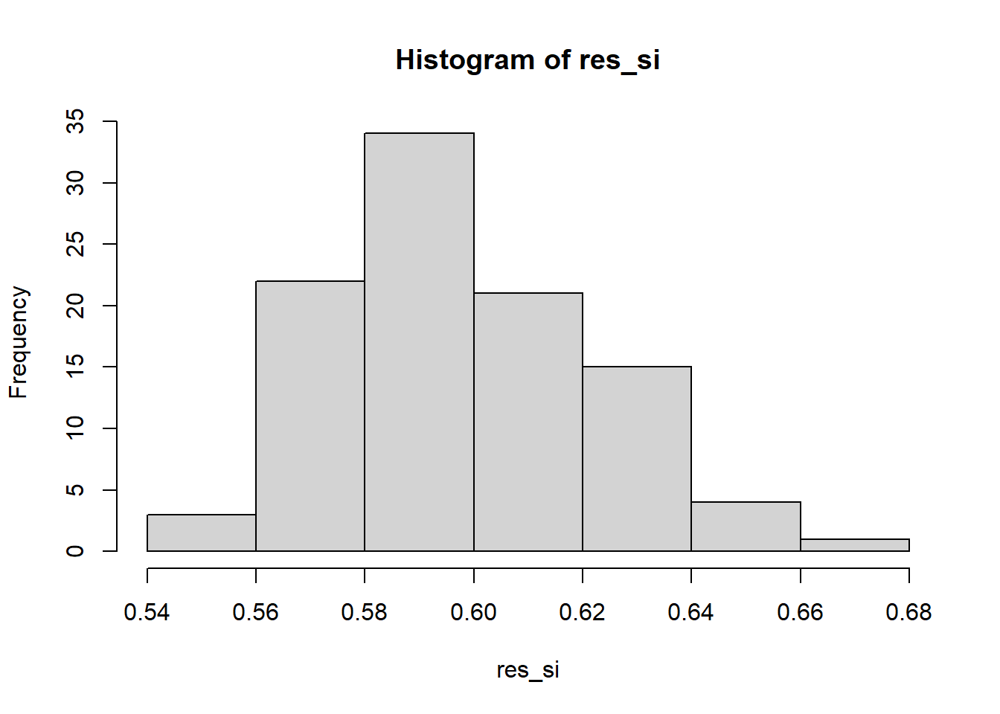
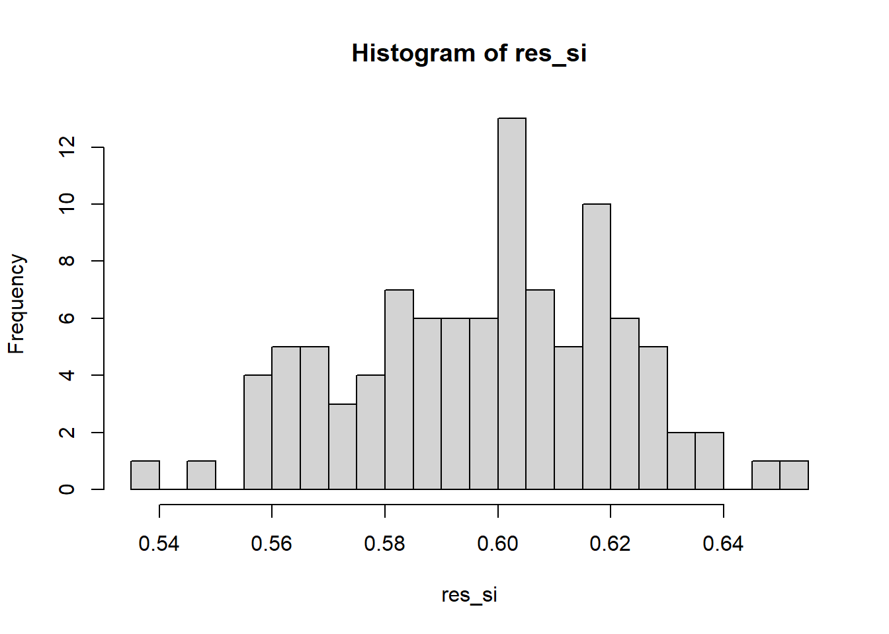

Vince il si o il no al referendum del 22 marzo 2026? spoiler: il si. Anzi no.
Attenzione! leggendo questo articolo di Ansa sembra che tutti gli istituiti di sondaggi siano d’accordo nel dire che vincerà il no, per un pelo. Solo Italo Bocchino, che di certo non è un riferimento d’eccellenza, dice che il si potrebbe vincere con un vantaggio del 5%. E io a questo punto mi sento un po’ pirla, perché le analisi che seguono vanno a sostenere proprio la tesi più assurda, ovvero quella di Bocchino.
Ulteriori conferma di vittoria del no potrebbe arrivare proprio dalla Meloni, che in questo articolo dice che in nessun caso si dimetterà dopo il referendum. Ecco, il fatto che si sentisse in bisogno di dirlo fa pensare che pure lei si aspetti un no vittorioso.
La Meloni stessa chiede agli elettori di andare a votare. Lo fa forse anche perché tutti gli istituti di sondaggi ritengono una maggior percentuale del si (comunque una con una vittoria rasata del no) nel caso in cui ci fosse un minor grado di astensionismo (che forse si registra più spesso tra i partiti in linea per il si).
le mie stime
Le analisi che sto per fare propendono a vantaggio del si.
Sono stati pubblicati due articoli su cui mi baso:
un articolo di Ipsos Doxa, del 5 marzo, in cui sono stimate le intenzioni di voto del si per ogni partito, nonché le percentuali di elettori per partito che intendono andare a votare.
un articolo della Gazzetta del Mezzogiorno, riportante le analisi di SuperMedia (di Youtrend), in cui è stimato lo share attuale degli elettori sui vari partiti
Ipsos Doxa sosteneva a 5 marzo che il si avrebbe vinto al 51%, per cui molto sul filo del rasoio.
Voglio vedere se sfruttando i dettagli delle loro analisi, e unendole alle stime dello share pubblicate da Youtrend, è possibile ottenere una mia stima.
Considero due metodi: uno frequentista e uno simulativo. Probabilmente sarebbe utile anche un metodo bayesiano, ma non ho particolari idee sulle prior da sfruttare. E gli altri due metodi sono certamente più intuitivi, per cui più facili da spiegare e altrettanto facili da implementare in R
I dati
I dati sui sondaggi elettorali, risalente al 14 marzo, sono riportati qui
I dati dei risultati delle analisi di Ipsos sono invece qui
Ho compilato a mano questa tabella, per mettere le cose in chiaro. La colonna share risulta dai dati del primo articolo, mentre le altre colonne risultano dalle analisi di Ipsos.
IMPORTANTE: Ipsos ha studiato le intenzioni di voto interne solo dei maggiori partiti, non ha detto quasi nulla sui partiti di centro, per cui IO HO ASSUNTO che le intenzioni di voto all’interno dei partiti di centro (ItaliaViva, +EU, Azione, NoiModerati) siano del 50% a favore del si (si vede che ciò non impatta sul risultato ma considera la maggiore variabilità delle stime).
share: sondaggi elettorali, dati del 16 marzo da SuperMedia: dicono la percentuale di voto di ogni partito se domani si tenessero le elezioni.
partecipazione: stima di Ipsos del 5 marzo : dice in che percentuale in ciascun partito le persone andranno a votare. molti valori sono 0.51, in quanto nell’articolo si dice che “nel centrosinistra si attesta una partecipazione intorno al 51%”. Riflette l’astensionismo per partito.
vota_si: stima di Ipsos del 5 marzo : dice in che percentuale in ciascun partito le persone andranno a votare si. Molti valori sono 0.5, in quanto nell’articolo il dato non è riportato per i partiti di centro. Questo valore non impatta sul risultato della vittoria del si o del no, ma agisce sulla distribuzione dei risultati (aumenta la varianza e quindi appiattisce la distribuzione).
vota_no: è uguale a 1-vota_si
Si vede che la somma della colonna share non somma a 1:
Code
sum(df$share)
[1] 0.961
Ciò potrebbe essere dovuto:
a una distorsione delle stime di Youtrend
all’omissione dei sondaggi di diversi micropartiti
Nel primo esperimento lascio tale colonna così com’è, mentre nel secondo la rinormalizzo per far si che sommino a 1.
Questo fatto non è da trascurare. Poniamo che tutti i micro-partiti siano a favore del no: vorrebbe dire che circa il 3-4% dei voti passerebbe dal si al no, una misura sufficiente a ribaltare il risultato. Molte stime che sto per fare vanno a considerare possibile una vittoria del si al 53%, mentre gli istituti di sondaggi dicono che sarà il no a vincere con un si al 49%. La differenza è proprio del 4%.
Metodo frequentista
L’idea è semplice: per ogni partito, cacolo uno score per il si e per il no. Lo score totale per il si sarà la somma degli score per il si, e analogamente per il no. Le percentuale stimata di persone che votano si e no saranno pari ai due score normalizzati per la loro somma.
print(paste0('stima di voto per il si: ', ratio_si))
[1] "stima di voto per il si: 0.551511344915381"
Code
print(paste0('stima di voto per il no: ', ratio_no))
[1] "stima di voto per il no: 0.448488655084619"
Per cui, usando questo metodo e questi dati, e non considerando l’impatto dei partiti di centro, la stima dell’esito del referendum è una vittoria del si al 55%
Metodo simulativo
In questo metodo, non si cerca un risultato analitico, ma si simulano i risultati usando il computer.
L’idea è quella di usare un modello generativo:
prima si campiona un elettore dalla lista dei partiti, utilizzando una multinomiale (dati di Youtrend sullo share)
dato il suo partito, si scopre si l’elettore si astiene o meno, utilizzando una bernoulli (dati di Ipsos sulla partecipazione)
dato il suo partito, e se l’elettore non si astiene, si campiona un si o un no dalla rispettiva probabilità di votare si, utilizzando una bernoulli (dati di Ipsos)
Alla fine, la percentuale di persone che avranno votato si è pari al numero totale di si diviso il numero totale di simulazioni degli elettori.
Utilizzando questo metodo T volte, si può anche contare quante volte vince il si per calcolare la probabilità che il si vinca (che differisce dalla percentuale stimata di persone che votano si).
Di seguito la funzione per simulare il referendum:
Anche secondo questo metodo sembra che il si vada a vincere. Tuttavia se si ripete la simulazione diverse volte si ottengono diversi risultati.
Provo ora a far andare 100 simulazioni con 1000 elettori l’una, e a vedere la distribuzione dei risultati.
Code
n_sim =100res_si =numeric(n_sim)for (i in1:n_sim){ res =simula_referendum(n_elettori =1000, prob_partito = df$share/sum(df$share), prob_vota = df$partecipazione, prob_si = df$vota_si) res_si[i] = res$r_si}
Code
hist(res_si)

Si vede che il valore minimo del si ottenuto da questo simulatore è del 54%, per cui sotto questo modello siamo praticamente certi che vinca il si.
Altri scenari: se tutti votassero seguendo il proprio partito
Se non si considera l’impatto dei partiti di centro sembra che il risultato sia certo per il si. Da questo articolo di Fanpage sembra che Azione, NoiModerati e +Europa siano per il si, e che invece ItaliaViva abbia lasciato “libertà di coscienza” (per cui si può lasciare l’assunzione del 50% per il si su questo partito). Non si può quindi supporre che il centro prevalga per il no con delle percentuali di voto per il si più realistiche del’assunzione pilatesca del 50%. Voglio ora mettere alla prova questa ipotesi facendo diverse assunzioni che potrebbero rafforzare il fronte per il no. Correggo le percentuali di favore per il si di tutti i partiti, portandole a 0 per i partiti di sinistra (pd, 5s, avs), a 0.5 per ItaliaViva e a 1 per tutti gli altri.
print(paste0('stima di voto per il si: ', ratio_si))
[1] "stima di voto per il si: 0.538452898008087"
Code
print(paste0('stima di voto per il no: ', ratio_no))
[1] "stima di voto per il no: 0.461547101991913"
Sembra che il no si sia rafforzato, ma non abbastanza da vincere.
Si prova ora con il metodo simulativo / MonteCarlo:
Code
n_sim =100res_si =numeric(n_sim)for (i in1:n_sim){ res =simula_referendum(n_elettori =1000, prob_partito = df2$share/sum(df2$share), prob_vota = df2$partecipazione, prob_si = df2$vota_si) res_si[i] = res$r_si}
Code
hist(res_si, breaks=20)

Anche in questo caso la probabilità stimata che il si vinca è del 100%.
altri scenari: se tutti votassero seguendo il proprio partito e non ci fossero astenuti
Si fa qui un’assunzione fortissima per un paese come l’Italia: che tutti vadano a votare. Se si continua a considerare l’altra ipotesi forte per cui tutti votino in linea con il proprio partito forse per il no c’è ancora speranza (Ipsos aveva rilevato che all’interno dei 5 stelle si sarebbe arrivati a una percentuale di voto per il si pari al 22% del partito, che tra l’altro sarebbe la seconda opposizione più forte dopo il pd).
Con queste due assunzioni, non abbiamo più bisogno né delle stime di Ipsos della colonna “vota_si” né di quelle della colonna “partecipazione”, per cui ci si può basare esclusivamente sull’articolo con i dati di Youtrend, e quindi dello share.
Usando questi dati, non si ha bisogno di simulazioni montecarlo o derivazioni analitiche complesse:
Lo score a favore del no sarà semplicemente la somma degli share di pd, 5s e avs, mentre quello del si sarà la somma degli share di tutti gli altri partiti, italia viva esclusa. La percentuale di voto del si sarà allora lo score del si diviso per i due score.
No, sembra che per il no non ci siano proprio speranze.
conclusioni
Tutti i metodi provati conducono alla soluzione univoca per cui vincerà il si. Bisogna tuttavia considerare l’imprecisione di questi sondaggi, e in particolare l’importanza e la variabilità delle stime ottenute da Ipsos il 5 marzo. Mi chiedo come abbiano fatto loro a stimare una vittoria del si con solo il 51% (le mie stime peggiori per il si, utilizzando i loro dati e i sondaggi di Youtrend, vanno al 53%). Dal 5 marzo a oggi sono successe tante cose (l’effetto Bartolozzi, con i suoi plotoni di esecuzione, che ha spinto per il no, e l’effetto Gratteri, con le sue minacce al Foglio, che ha spinto per il si) che avranno sicuramente già reso obsolete le analisi di Ipsos. Tuttavia non esistono in Italia istituti di sondaggi politici migliori di Ipsos Doxa (almeno io credo).
Per concludere, faccio riferimento a un altro articolo, molto interessante, che spiega le difficoltà del task di previsione dei referendum, a questo link. Nell’articolo si mostra come fosse stato grande l’errore di stima del si e del no nel referendum del 2016. Tuttavia va notato che anche in quel referendum, la stima della percentuale esatta del si avesse rilevato un grave errore (fu stimato un si al 46% che poi si rivelò essere del 40%) ma la stima di chi avesse avuto la vittoria netta, tra il si e il no, fu precisa (si predisse che avrebbe vinto il no, e il no vinse). Per cui stimare le percentuali di voto esatte può essere difficile, ma alla fine quello che ci interessa davvero è scoprire chi vincerà effettivamente, e questo è relativamente più facile da fare (non voglio sapere il numero esatto percentuale di si, ma solo se tale percentuale sarà maggiore o minore di 0.5). Beh, il fatto che le stime di voto siano tanto vicine al 50% rende comunque molto difficile anche questa versione semplificata del task: un errore del 2% è sufficiente a far vincere il no invece del si.
Lo stesso articolo spiega un concetto interessante: i sondaggi delle elezioni politiche sono in genere più facili da fare delle stime dei referendum. Sembra paradossale, in quanto un referendum ha solo una percentuale da stimare (si o no) mentre durante le elezioni bisogna azzeccare la previsione per ogni singolo partito. La ragione risiede nel fatto che le elezioni sono serie storiche: si osservano più volte nel tempo, e si possono utilizzare trend, stagionalità e auto-correlazioni temporali per affinare le previsioni, mentre durante un referendum non c’è un valore che è già stato osservato in passato. Si hanno zero osservazioni dirette del passato, e l’unica cosa che si può fare è utilizzare un campione rappresentativo della popolazione per stimare il risultato. Ragion per cui sembra assolutamente razionale sfruttare il voto di appartenenza di partito (specialmente in un referendum dove nessuno ha capito nulla di cosa si va a votare) per stimare i risultati (cosa su cui io mi sono sempre basato, e che rende questo approccio radicalmente opposto rispetto a quelli utilizzati dagli istituti di sondaggi).
Bisogna tener conto anche di un altra cosa: gli istituti di sondaggi non sono d’accordo per caso. Se sono d’accordo fra di loro, verosimilmente tra loro si sono parlati. E quando questo accade, si può creare un bias di conferma e consenso forzato. Questo bias si è visto particolarmente nelle elezioni del 2018 e del 2022, nelle quali si sono viste delle rilevanti sopravvalutazioni di pd e 5s, che erano state condivise da istituti di sondaggi diversi.
Ma attenzione! leggendo questo articolo di Ansa sembra che tutti gli istituiti di sondaggi siano d’accordo nel dire che vincerà il no, per un pelo. Solo Italo Bocchino, che di certo non è un riferimento d’eccellenza, dice che il si potrebbe vincere con un vantaggio del 5%. E io a questo punto mi sento un po’ pirla.